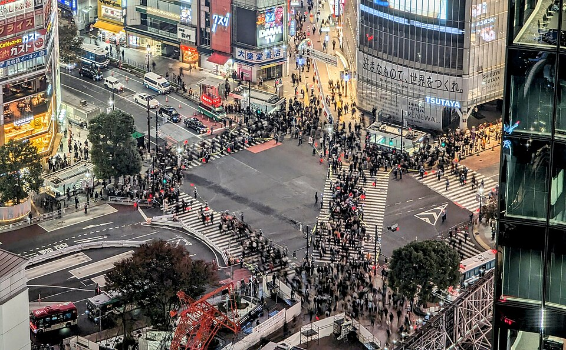
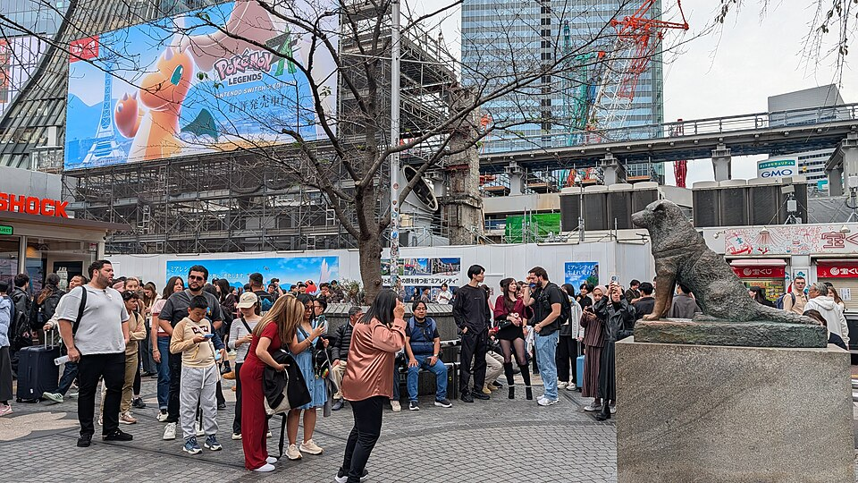
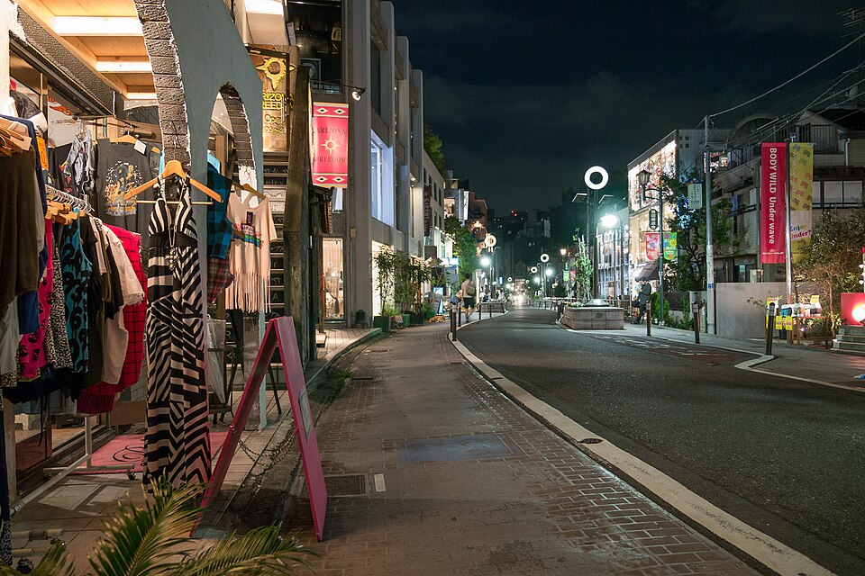
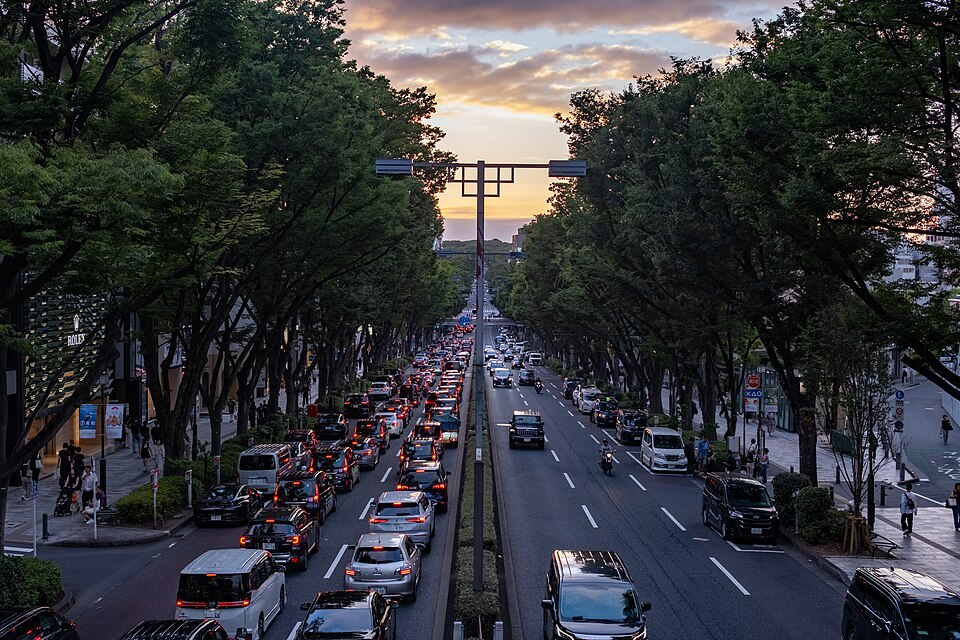
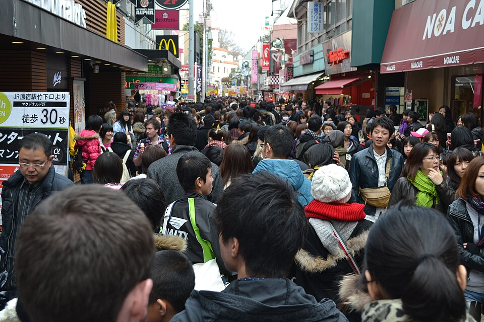
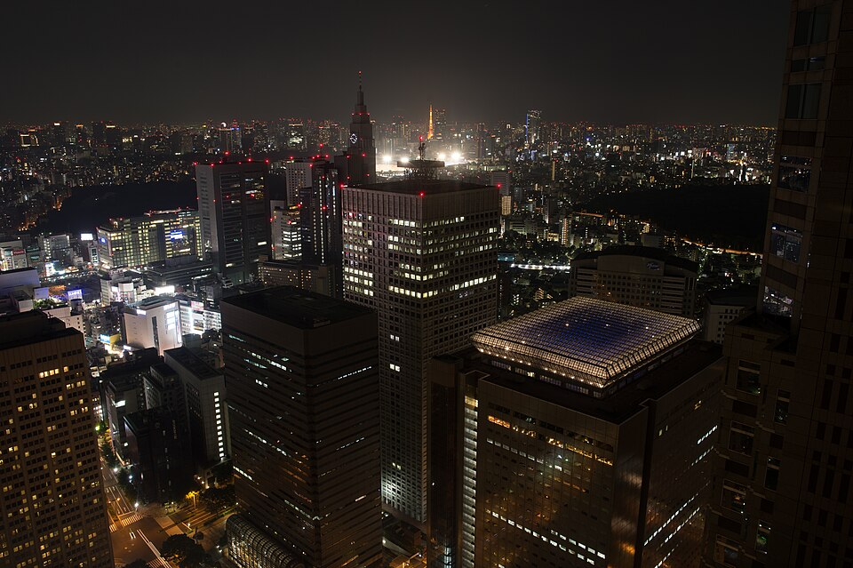

Tokyo · сб 10.10 · маршрут дня
Akihabara → Shibuya
JR Akihabara: жёлтая линия Sobu (направление Mitaka / 三鷹) до Yoyogi. Там на соседнюю платформу, зелёная Yamanote (направление Shibuya / Shinagawa), 2 остановки до Shibuya. Выход Hachiko (ハチ公口).
Без пересадки: зелёная Yamanote через Tokyo, ~30 мин.
Shibuya: Hachiko, перекрёсток, Miyashita Park
Сразу у выхода памятник Hachiko и главный перекрёсток Shibuya Scramble. Дальше 3 минуты на север вдоль путей: Miyashita Park - длинный парк на крыше торгового центра, с него видно Shibuya сверху. Вход бесплатный.




Cat Street → Omotesando
От северного края Miyashita Park через дорогу начинается Cat Street - тихая пешеходная улица с магазинами и кафе. Идёшь по ней на север, она выводит прямо на Omotesando.


Omotesando: бульвар с деревьями и бутиками, обед
Та самая улица: широкий бульвар с деревьями дзельква и архитектурными магазинами брендов. Обед здесь. Идёшь по бульвару вверх, к станции Harajuku (~1 км).


Takeshita-dori (по желанию)
Узкая улица молодёжной моды напротив станции Harajuku. В праздничную субботу очень плотная толпа, хватит пройти кусок или глянуть с угла.


Yoyogi Park - центральный парк
Да, заходить можно: вход свободный, открыт круглосуточно. От станции Harajuku через мост 5 минут. Газоны, пикники, музыканты по выходным. Рядом лес храма Meiji Jingu (до 16:40), если захочется.
Фото осенние (ноябрь), сейчас деревья ещё зелёные.


Закат: смотровая мэрии Tokyo (Shinjuku)
JR Harajuku → зелёная Yamanote (направление Shinjuku / Ikebukuro), 2 остановки до Shinjuku. Западный выход (西口), ~10 мин пешком до здания мэрии (Tokyo Metropolitan Government Building No.1), лифт на 45 этаж. 202 м, без билетов, 9:30-22:00. На западе виден Fuji.

.jpg){kind=link}
Ужин в Shinjuku и домой
Из Shinjuku жёлтая Sobu едет прямо до Akihabara без пересадок, 19 мин. Быстрее: оранжевая Chuo rapid до Ochanomizu + жёлтая 1 остановка, 14 мин.
Следующие дни
- Вс 11.10: ясно. Shibuya Sky днём свободно 11:00-12:20.
- Пн 12.10, праздник: сад Shinjuku Gyoen открыт; главный день фестиваля Kappabashi.
- Вт 13.10, облачно: старый Tokyo рядом с отелем - Asakusa, Yanaka, Ueno.